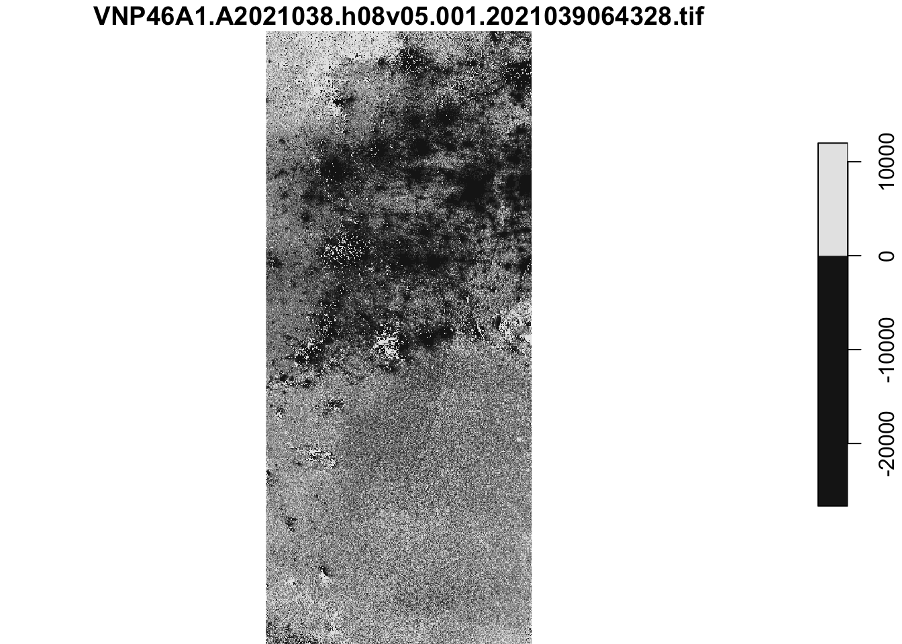
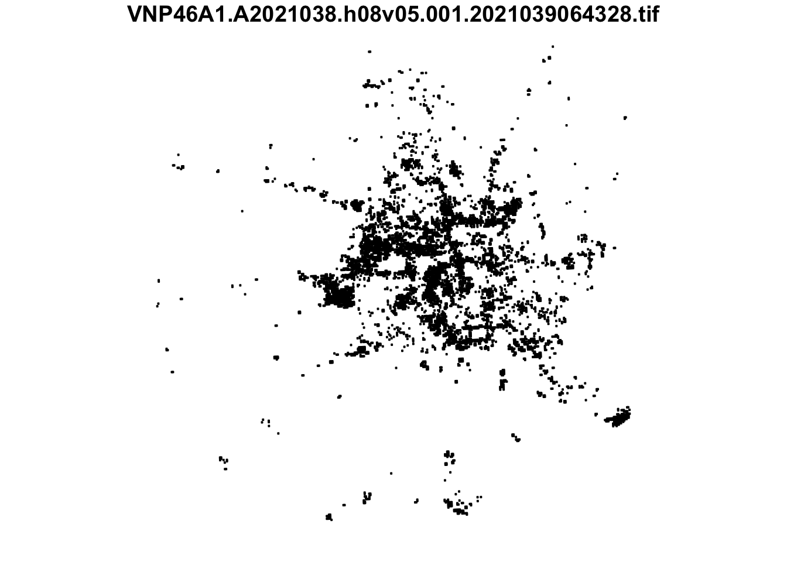
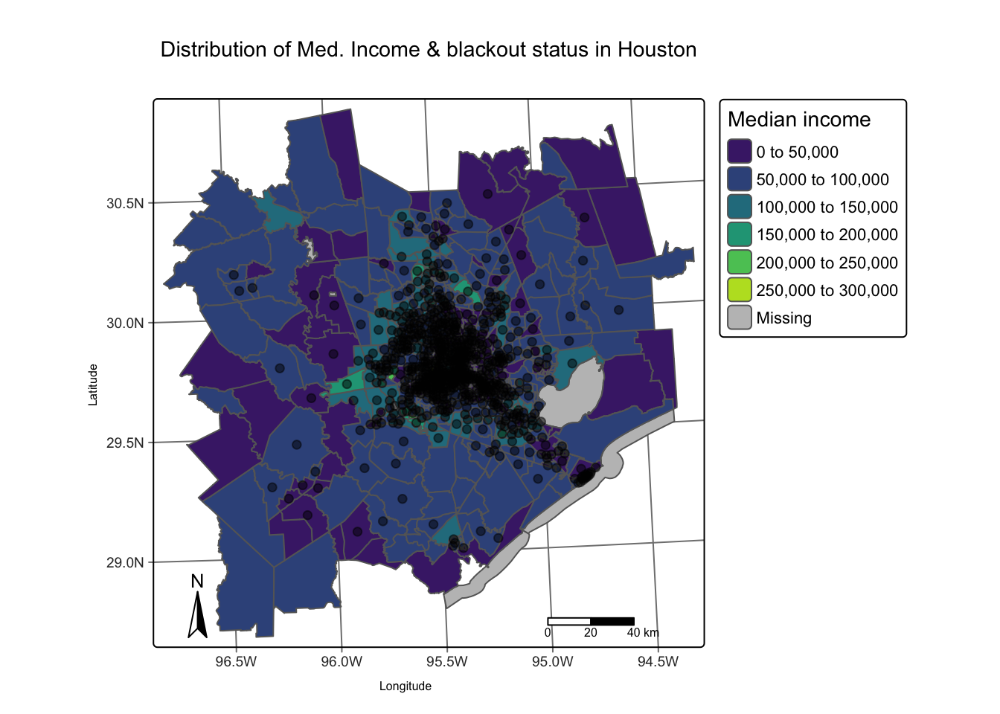
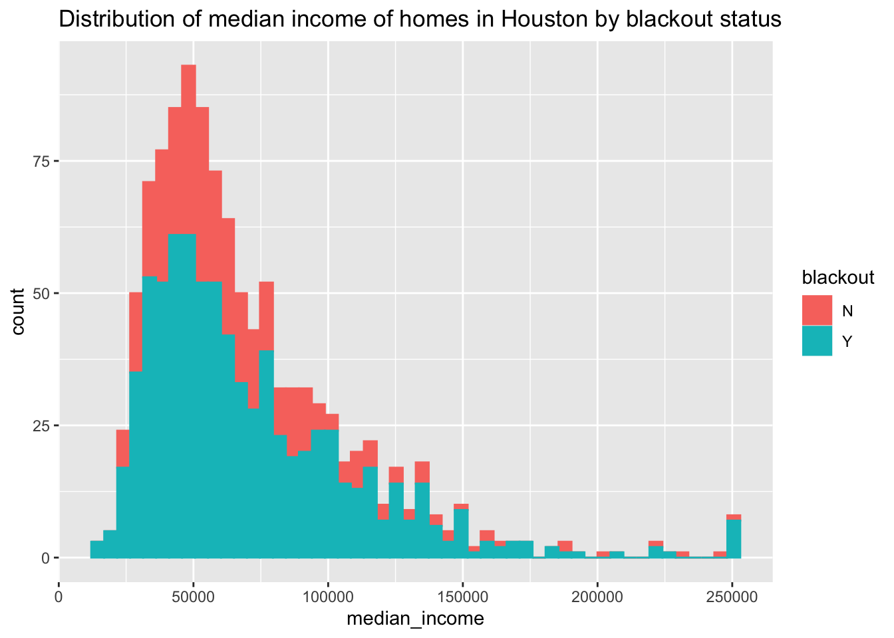
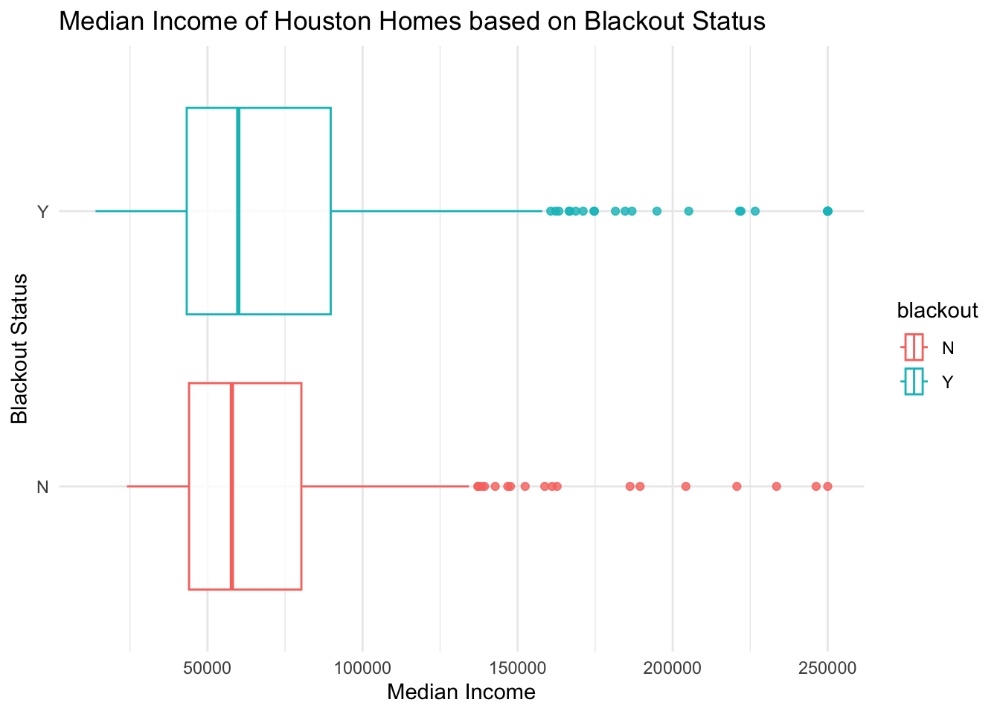

library(sf)
library(stars)
library(tmap)
library(raster)
library(terra)
library(dplyr)
library(ggplot2)
Texas Blackouts
Analyzing the Effects of the Texas February 2021 Storm on the Houston metropolitan Area
📦 repo link | https://github.com/floraham/texas-blackout
Context
“In February 2021, Texas faced a significant power crisis resulting from three severe winter storms that swept across the United States on February 10–11, 13–17, and 15–20.”1 For additional insights, explore these engineering and political perspectives.
The objectives and methods:
Estimate the number of households in Houston that experienced power loss due to the initial two storms. To determine the count of homes affected by power outages, we will spatially join these areas with [OpenStreetMap](https://www.openstreetmap.org/#map=4/38.01/-95.84) data on buildings and roads.
Investigate whether socioeconomic factors serve as predictors of community recovery from a power outage. For the exploration of potential socioeconomic factors influencing recovery, the analysis will be linked with data from the US Census Bureau.
This analysis will rely on remotely-sensed night lights data acquired from the Visible Infrared Imaging Radiometer Suite (VIIRS) aboard the Suomi satellite. Specifically, we will use the VNP46A1 to identify variations in night lights before and after the storms as a method to identify areas that lost electrical power.
Data
Night lights ✨
We use NASA’s Worldview to explore the data around the day of the storm. There are several days with too much cloud cover to be useful, but 2021-02-07 and 2021-02-16 provide two clear, contrasting images to visualize the extent of the power outage in Texas.
VIIRS data is distributed through NASA’s Level-1 and Atmospheric Archive & Distribution System Distributed Active Archive Center (LAADS DAAC). Many NASA Earth data products are distributed in 10x10 degree tiles in sinusoidal equal-area projection. Tiles are identified by their horizontal and vertical position in the grid. Houston lies on the border of tiles h08v05 and h08v06. We therefore need to download two tiles per date.
The following files had been sub-setted & stored in the VNP46A1 folder.
VNP46A1.A2021038.h08v05.001.2021039064328.tif: tile h08v05, collected on 2021-02-07VNP46A1.A2021038.h08v06.001.2021039064329.tif: tile h08v06, collected on 2021-02-07VNP46A1.A2021047.h08v05.001.2021048091106.tif: tile h08v05, collected on 2021-02-16VNP46A1.A2021047.h08v06.001.2021048091105.tif: tile h08v06, collected on 2021-02-16
Roads 🛣️ gis_osm_roads_free_1.gpkg
Typically highways account for a large portion of the night lights observable from space (see Google’s Earth at Night). To minimize falsely identifying areas with reduced traffic as areas without power, we will ignore areas near highways.
OpenStreetMap (OSM) is a collaborative project which creates publicly available geographic data of the world. Ingesting this data into a database where it can be subsetted and processed is a large undertaking. Fortunately, third party companies redistribute OSM data. We used Geofabrik’s download sites to retrieve a shapefile of all highways in Texas and prepared a Geopackage (.gpkg file) containing just the subset of roads that intersect the Houston metropolitan area.
Houses 🏠 gis_osm_buildings_a_free_1.gpkg
We also obtain building data from OpenStreetMap. We again downloaded from Geofabrick and prepared a GeoPackage containing only houses in the Houston metropolitan area.
Socioeconomic 👨👩👧👦 ACS_2019_5YR_TRACT_48.gdb
We cannot readily get socioeconomic information for every home, so instead we obtained data from the U.S. Census Bureau’s American Community Survey for census tracts in 2019. The folder ACS_2019_5YR_TRACT_48.gdb is an ArcGIS “file geodatabase”, a multi-file proprietary format that’s roughly analogous to a GeoPackage file. We can use st_layers() to explore the contents of the geodatabase. Each layer contains a subset of the fields documents in the ACS metadata. The geodatabase contains a layer holding the geometry information, separate from the layers holding the ACS attributes. You have to combine the geometry with the attributes to get a feature layer that sf can use.
Project Roadmap
Below is an outline of the steps taken to achieve the objectives.
Find locations of blackouts
For improved computational efficiency and easier inter-operability with sf, we use the stars package for raster handling.
combine the data
- We first read in night lights tiles, then combine tiles into a single
starsobject for each date (2021-02-07 and 2021-02-16) usingst_mosaic.
## Read in all four night lights tiles, in folder VNP46A1, using the package "stars"
tile1_2021_02_07 = read_stars("~/dev/eds223/assignment-3-floraham/data/VNP46A1/VNP46A1.A2021038.h08v05.001.2021039064328.tif", package = "stars")
tile2_2021_02_07 = read_stars("~/dev/eds223/assignment-3-floraham/data/VNP46A1/VNP46A1.A2021038.h08v06.001.2021039064329.tif", package = "stars")
tile3_2021_02_16 = read_stars("~/dev/eds223/assignment-3-floraham/data/VNP46A1/VNP46A1.A2021047.h08v05.001.2021048091106.tif", package = "stars")
tile4_2021_02_16 = read_stars("~/dev/eds223/assignment-3-floraham/data/VNP46A1/VNP46A1.A2021047.h08v06.001.2021048091105.tif", package = "stars")
# combine tiles into single stars object for each date (2021-02-07 and 2021-02-16), using st_mosaic
combined_02_07 = st_mosaic(tile1_2021_02_07, tile2_2021_02_07)
combined_02_16 = st_mosaic(tile3_2021_02_16, tile4_2021_02_16)create a blackout mask
- We then find the change in night lights intensity (presumably) caused by the storm, and reclassify the difference raster, assuming that any location that experienced a drop of more than 200 nW cm-2sr-1 experienced a blackout. Then we assign
NAto all locations that experienced a drop of less than 200 nW cm-2sr.-1
#find the change in night lights intensity (presumably) caused by the storm by calculating the light difference between the two dates
difference <- combined_02_07 - combined_02_16
#check out difference in night lights intensity
plot(difference)downsample set to 6
#reclassify the difference raster, assuming that any location that experienced a drop of more than 200 nW cm-2sr-1 experienced a blackout by assigning NA to locations that experienced drop of less than 200 nW cm-2sr-1
#assigning all the houses that experienced a drop of 200 and more to a blackout mask.
mask_blackout <- difference > 200
mask_blackout[mask_blackout == FALSE] <- NAvectorize the mask
We use st_as_sf() to vectorize the blackout mask and fix any invalid geometries using st_make_valid.
blackout_mask_vector <- st_as_sf(mask_blackout) %>% st_make_valid() ##can plot() to check out what the blackout mask looks like crop the vectorized map to our region of interest
- We first define the Houston metropolitan area with the following coordinates : (-96.5, 29), (-96.5, 30.5), (-94.5, 30.5), (-94.5, 29) and then turn these coordinates into a polygon using
st_polygon. - Then we convert the polygon into a simple feature collection using
st_sfc()and assign a CRS, making sure that the polygon is in the same CRS and crop (spatially subset) the blackout mask to our region of interest. Lastly we re-project the cropped blackout dataset to EPSG:3083 (NAD83 / Texas Centric Albers Equal Area).
#crop the vectorized map to our region of interest using polygon of Houston's coordinates
houston_polygon <- st_polygon(list(rbind(c(-96.5,29), c(-96.5,30.5), c(-94.5, 30.5), c(-94.5,29), c(-96.5,29))))
#convert the polygon into a simple feature collection using st_sfc() and assign the CRS 4326, which is the same as the night lights data
houston_border_sf <- st_sfc(houston_polygon, crs = st_crs(mask_blackout))
##inspect the polygon crs to make sure the crs is 4326, nightlights dataset
st_crs(houston_border_sf) == st_crs(mask_blackout)[1] TRUE# spatially subset the blackout mask to the Houston Area
houston_blackout <- blackout_mask_vector[houston_border_sf, ,]
#re-project the cropped blackout dataset to EPSG:3083 (NAD83 / Texas Centric Albers Equal Area)
houston_blackout <- st_transform(houston_blackout, crs = 'EPSG:3083')
## transform to sf object
final_houston_blackout <- st_as_sf(houston_blackout)
#verify that it's an sf object
class(final_houston_blackout)[1] "sf" "data.frame"##verify that the final, transformed sf houston blackout dataset is 3083
st_crs(final_houston_blackout) Coordinate Reference System:
User input: EPSG:3083
wkt:
PROJCRS["NAD83 / Texas Centric Albers Equal Area",
BASEGEOGCRS["NAD83",
DATUM["North American Datum 1983",
ELLIPSOID["GRS 1980",6378137,298.257222101,
LENGTHUNIT["metre",1]]],
PRIMEM["Greenwich",0,
ANGLEUNIT["degree",0.0174532925199433]],
ID["EPSG",4269]],
CONVERSION["Texas Centric Albers Equal Area",
METHOD["Albers Equal Area",
ID["EPSG",9822]],
PARAMETER["Latitude of false origin",18,
ANGLEUNIT["degree",0.0174532925199433],
ID["EPSG",8821]],
PARAMETER["Longitude of false origin",-100,
ANGLEUNIT["degree",0.0174532925199433],
ID["EPSG",8822]],
PARAMETER["Latitude of 1st standard parallel",27.5,
ANGLEUNIT["degree",0.0174532925199433],
ID["EPSG",8823]],
PARAMETER["Latitude of 2nd standard parallel",35,
ANGLEUNIT["degree",0.0174532925199433],
ID["EPSG",8824]],
PARAMETER["Easting at false origin",1500000,
LENGTHUNIT["metre",1],
ID["EPSG",8826]],
PARAMETER["Northing at false origin",6000000,
LENGTHUNIT["metre",1],
ID["EPSG",8827]]],
CS[Cartesian,2],
AXIS["easting (X)",east,
ORDER[1],
LENGTHUNIT["metre",1]],
AXIS["northing (Y)",north,
ORDER[2],
LENGTHUNIT["metre",1]],
USAGE[
SCOPE["State-wide spatial data presentation requiring true area measurements."],
AREA["United States (USA) - Texas."],
BBOX[25.83,-106.66,36.5,-93.5]],
ID["EPSG",3083]]exclude highways from blackout mask
The roads geopackage includes data on roads other than highways. However, we can avoid reading in data we don’t need by taking advantage of st_read’s ability to subset using a SQL query. First, we load just highway data from geopackage using st_read andreproject data to EPSG:3083, identifying areas within 200m of all highways using st_buffer. st_buffer produces undissolved buffers, so we use st_union to dissolve them. Then we find areas that experienced blackouts that are further than 200m from a highway.
The SQL query we will use is:
query <- "SELECT * FROM gis_osm_roads_free_1 WHERE fclass='motorway'"
highways <- st_read("data/gis_osm_roads_free_1.gpkg", query = query)
## Read in highway data from roads using SQL query ##
query <- "SELECT * FROM gis_osm_roads_free_1 WHERE fclass='motorway'"
highways <- st_read("~/dev/eds223/assignment-3-floraham/data/gis_osm_roads_free_1.gpkg", query = query)# reproject data to EPSG:3083
highways_3038 <- st_transform(highways, crs="EPSG:3083")
##verify it's the right crs
st_crs(highways_3038)Coordinate Reference System:
User input: EPSG:3083
wkt:
PROJCRS["NAD83 / Texas Centric Albers Equal Area",
BASEGEOGCRS["NAD83",
DATUM["North American Datum 1983",
ELLIPSOID["GRS 1980",6378137,298.257222101,
LENGTHUNIT["metre",1]]],
PRIMEM["Greenwich",0,
ANGLEUNIT["degree",0.0174532925199433]],
ID["EPSG",4269]],
CONVERSION["Texas Centric Albers Equal Area",
METHOD["Albers Equal Area",
ID["EPSG",9822]],
PARAMETER["Latitude of false origin",18,
ANGLEUNIT["degree",0.0174532925199433],
ID["EPSG",8821]],
PARAMETER["Longitude of false origin",-100,
ANGLEUNIT["degree",0.0174532925199433],
ID["EPSG",8822]],
PARAMETER["Latitude of 1st standard parallel",27.5,
ANGLEUNIT["degree",0.0174532925199433],
ID["EPSG",8823]],
PARAMETER["Latitude of 2nd standard parallel",35,
ANGLEUNIT["degree",0.0174532925199433],
ID["EPSG",8824]],
PARAMETER["Easting at false origin",1500000,
LENGTHUNIT["metre",1],
ID["EPSG",8826]],
PARAMETER["Northing at false origin",6000000,
LENGTHUNIT["metre",1],
ID["EPSG",8827]]],
CS[Cartesian,2],
AXIS["easting (X)",east,
ORDER[1],
LENGTHUNIT["metre",1]],
AXIS["northing (Y)",north,
ORDER[2],
LENGTHUNIT["metre",1]],
USAGE[
SCOPE["State-wide spatial data presentation requiring true area measurements."],
AREA["United States (USA) - Texas."],
BBOX[25.83,-106.66,36.5,-93.5]],
ID["EPSG",3083]]# identify areas within 200m of all highways using st_buffer. Use st_union to dissolve overlapping polygons.
a_near_hwys <- st_buffer(highways_3038, dist = 200) %>% st_union()
# find areas that experienced blackouts that are further than 200m from a highway by spacially subsetting houston blackout areas to ones near highways, and taking st_difference of that.
blackouts_far_hwy_houston <- final_houston_blackout[a_near_hwys, , op = st_difference]
#plot to see what it looks like
plot(blackouts_far_hwy_houston)
Find homes impacted by blackouts
load buildings data
We load buildings dataset using st_read and the following SQL query to select only residential buildings. We first reproject data to EPSG:3083.
The SQL query we will use is:
SELECT * FROM gis_osm_buildings_a_free_1
WHERE (type IS NULL AND name IS NULL)
OR type in ('residential', 'apartments', 'house', 'static_caravan', 'detached')
#load buildings dataset using st_read and the following SQL query to select only residential buildings
query_buildings <- "SELECT * FROM gis_osm_buildings_a_free_1 WHERE (type IS NULL AND name IS NULL) OR type in ('residential', 'apartments', 'house', 'static_caravan', 'detached')"
buildings <- st_read("~/dev/eds223/assignment-3-floraham/data/gis_osm_buildings_a_free_1.gpkg", query = query_buildings)find homes in blackout areas
- filter to homes within blackout areas
- count number of impacted homes
##check CRS's are the same
st_crs(buildings) == st_crs(blackouts_far_hwy_houston)[1] FALSE##transform buildings crs
buildings <- st_transform(buildings, crs = st_crs(blackouts_far_hwy_houston))
# filtering the houses data with the blackout mask
buildings_blackout <- buildings[blackouts_far_hwy_houston, drop = FALSE]
## View the data frame for inspection
View(buildings_blackout)
#count number of impacted homes
print(paste0(nrow(buildings_blackout), " Houston homes experienced power outage due to the Texas storms in Feburary, 2021"))[1] "164867 Houston homes experienced power outage due to the Texas storms in Feburary, 2021"Investigate socioeconomic factors
load ACS data
To set up for loading, we use st_read() to load the geodatabase layers and geometries are stored in the ACS_2019_5YR_TRACT_48_TEXAS layer. The income data is stored in the X19_INCOME layer, so we select the median income field B19013e1 andreproject data to EPSG:3083.
census <- st_read("~/dev/eds223/assignment-3-floraham/data/ACS_2019_5YR_TRACT_48_TEXAS.gdb", layer = "ACS_2019_5YR_TRACT_48_TEXAS")Reading layer `ACS_2019_5YR_TRACT_48_TEXAS' from data source
`/Users/florahamilton/dev/eds223/assignment-3-floraham/data/ACS_2019_5YR_TRACT_48_TEXAS.gdb'
using driver `OpenFileGDB'
Simple feature collection with 5265 features and 15 fields
Geometry type: MULTIPOLYGON
Dimension: XY
Bounding box: xmin: -106.6456 ymin: 25.83716 xmax: -93.50804 ymax: 36.5007
Geodetic CRS: NAD83income <- st_read("~/dev/eds223/assignment-3-floraham/data/ACS_2019_5YR_TRACT_48_TEXAS.gdb", layer = "X19_INCOME")Reading layer `X19_INCOME' from data source
`/Users/florahamilton/dev/eds223/assignment-3-floraham/data/ACS_2019_5YR_TRACT_48_TEXAS.gdb'
using driver `OpenFileGDB'#select median income field B19013e1
median_income <- income %>% dplyr::select(GEOID, B19013e1) determine which census tracts experienced blackouts
- join the income data to the census tract geometries by joining by geometry ID and spatially join census tract data with buildings determined to be impacted by blackouts, then find which census tracts had blackouts.
#determine which census tracts experienced blackouts
#Join the income data to the census tract geometries. Join by geometry ID
median_income_df <- median_income %>% rename(GEOID_Data = GEOID,
median_income = B19013e1)
##check types to varify that they are the same class
class(median_income_df$GEOID_Data) == class(census$GEOID_Data)[1] TRUEjoined_income_census <- left_join(census,
median_income_df,
by = "GEOID_Data")
## filter census data by buildings determined to be impacted by blackouts.
# transforming both objects to the correct crs
joined_income_census <- st_transform(joined_income_census, crs = st_crs(census))
buildings_blackout <- st_transform(buildings_blackout, crs = st_crs(census))
#check that they are the same crs
st_crs(joined_income_census) == st_crs(buildings_blackout)[1] TRUE## filtering and mutating to add a blackout column for affected tracts
census_blackout <- joined_income_census[buildings_blackout,]%>% mutate(blackout = 'Y')
print(paste0(nrow(census_blackout), " census tracts had blackouts"))[1] "778 census tracts had blackouts"## Since we have blackout status of Y indicated, we will want to indicate "N" for no-blackout areas as well, for full dataset.
#census_income_cropped combined with census_blackout
census_Y_N <- full_join(as.data.frame(joined_income_census), as.data.frame(census_blackout))Joining with `by = join_by(STATEFP, COUNTYFP, TRACTCE, GEOID, NAME, NAMELSAD,
MTFCC, FUNCSTAT, ALAND, AWATER, INTPTLAT, INTPTLON, Shape_Length, Shape_Area,
GEOID_Data, median_income, Shape)`census_Y_N$blackout[is.na(census_Y_N$blackout)] = "N"
#check the class
class(census_Y_N)[1] "data.frame"## make sure it's an sf object
census_Y_N <- st_as_sf(census_Y_N)
#check census_Y_N class, that it's a dataframe.
class(census_Y_N)[1] "sf" "data.frame"compare incomes of impacted tracts to unimpacted tracts
- create a map of median income by census tract, designating which tracts had blackouts
- plot the distribution of income in impacted and unimpacted tracts
#join income data to the census tract geometries and crop to region of interest
census_income_geom <- left_join(census, median_income_df,
by = "GEOID_Data") %>% st_transform(3083) #this is texas#
houston_border_sf <- houston_border_sf %>% st_transform(3083)
#spatial crop joined census data to houston border
census_income_geom_cropped <- census_income_geom[houston_border_sf, op = st_intersects]
## use tmap to plot income distribution and affected areas. Make graph aesthetics.
tmap_mode("plot")
tm_shape(census_income_geom_cropped) +
tm_graticules() +
tm_polygons("median_income", palette= "-viridis", title = "Median income") +
tm_shape(census_blackout) + tm_dots(size = 0.4, alpha = 0.5) +
tm_title( "Distribution of Med. Income & blackout status in Houston") +
tm_scalebar(position = c("RIGHT", "BOTTOM")) +
tm_compass(position = c("LEFT", "BOTTOM")) +
tm_xlab("Longitude", size = 0.5) +
tm_ylab("Latitude", rotation = 90, size = 0.5) 
#plot histogram of the distribution of median incomes of homes by blackout status
#Plot from one dataset so that ggplot can plot both datasets on one axis & autogenerate legend
census_Y_N_houston <- census_Y_N %>% st_transform(3083)
houston_border_sf <- houston_border_sf %>% st_transform(3083)
census_Y_N_houston <- census_Y_N_houston[houston_border_sf, op = st_intersects]
ggplot(census_Y_N_houston, aes(median_income)) + geom_histogram(aes(color = blackout, fill = blackout), bins = 50) + ggtitle("Distribution of median income of homes in Houston by blackout status")Warning: Removed 10 rows containing non-finite values (`stat_bin()`).
## Doing other statistical explorations
# plotting the comparison data via geom jitter plot
ggplot(census_Y_N_houston, aes(x = median_income, y = blackout)) +
geom_boxplot(aes(color = blackout), alpha = 0.8) +
labs(title = "Median Income of Houston Homes based on Blackout Status",
y = "Blackout Status",
x = "Median Income") +
theme_minimal()Warning: Removed 10 rows containing non-finite values (`stat_boxplot()`).
### Summarizing statistics
census_Y_N_houston %>%
group_by(blackout) %>%
summarize(mean = mean(median_income, na.rm = TRUE),
median = median(median_income, na.rm = TRUE),
sd = sd(median_income, na.rm = TRUE))Simple feature collection with 2 features and 4 fields
Geometry type: MULTIPOLYGON
Dimension: XY
Bounding box: xmin: 1808144 ymin: 7178529 xmax: 2053896 ymax: 7423349
Projected CRS: NAD83 / Texas Centric Albers Equal Area
# A tibble: 2 × 5
blackout mean median sd Shape
<chr> <dbl> <dbl> <dbl> <MULTIPOLYGON [m]>
1 N 67859. 57858. 36526. (((1833927 7192789, 1833903 7193076, 1833766 71…
2 Y 70939. 59916 39311. (((1895641 7236524, 1896074 7237007, 1896410 72…Discussion
We found that 778 census tracts had been affected by Texas’s 2021 energy crisis, amounting to 164,867 total homes experiencing power outage between the studied dates (Feb 07, 2021 to Feb 16, 2021).
The average median income for homes that experienced a blackout was $70,939, slightly higher than the average median income for homes that didn’t experience a blackout, which was $67,859. It is important to note that 1) our factor of interest was median income within census tracts and that other socioeconomic factors could reveal unexplored spatial patterns, and that 2) weather conditions were not normalized to conduct this exercise, variable that could cause a different outcome.
Footnotes
Wikipedia. 2021. “2021 Texas power crisis.” Last modified October 2, 2021. https://en.wikipedia.org/wiki/2021_Texas_power_crisis.↩︎